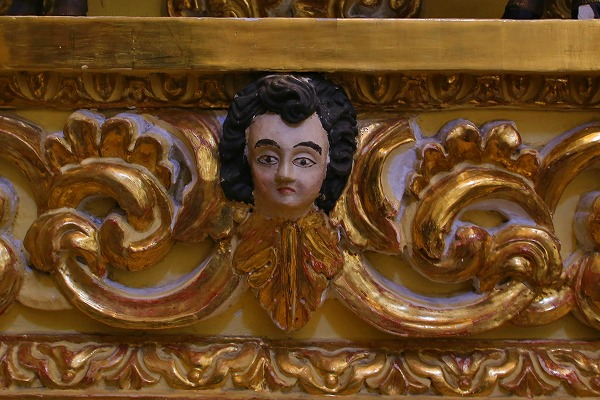

サンフランシスコ教会/チョルーラ、プエブラ SanFrancisco Acatepec/Puebla
メキシコ珍寺武者修行、本日はメキシコシティからバスで2時間半程の
プエブラという街に来た。
美しい街並みを擁する世界遺産の街だ。
そんなプエブラの郊外の
チョルーラという場所に凄い教会があると聞きつけて行った見ることにした。
まず訪れたのは
サンフランシスコ・アカテペック。
プエブラは陶器の街でもあり、この教会の外側にも惜しげもなく綺麗なタイルが使われている。
16世紀に造られたこの教会はメキシコを代表する
やりすぎバロックの名建築なのだ。
中に入ってみると…
もうなんか、上から神様がこぼれ落ちてきそうな勢いの天井だ。
見上げれば金色の装飾に混ざって凄い量の顔が。
顔、顔、顔だらけですよ。
さらに進むと
隙間恐怖症的な典型的な超バロック装飾空間。
押しつぶされそうな圧倒的なドーム。
よく見るとここも御顔だらけ。
顔顔顔…
しかもプエブラの中心街やメキシコシティにある正統派のカトリック教会などと違って
ひとつひとつの彫像が妙にポンチだ。
ホラ、ね。
このような
ポンチバロック（命名私）が出現するバックグラウンドとしてスペインの教会建設ラッシュが挙げられる。
中世、メキシコを占領したスペインは現地の人々に対してまずキリスト教、カトリックを信仰させようとする。
その際、教会を建設しなければならない。
起点となる主要な街の教会はスペインから来た建築家や職人が大いに腕をふるった事だろう。
かくして本家スペインを凌ぐような壮大なバロック様式、あるいはバロックを更に煮詰めたチュリゲラ様式の教会がメキシコ全土に建てられた。
ところが、地方都市や郊外の教会までは手が回らない。
そこで基本設計やファサードといった主要部分だけスペイン人が携わり、細かい部分の施工は現地のメキシコ人にお任せ、というケースも多かった。
で、地元の宮大工や細工師のような人達に細かい装飾が託される訳だが、もちろん彼らも海の向こうからやってきたキリスト教なんて良く判ってない。
まあ、こんな感じかな？という
記憶スケッチ状態であちこちに風変わりな教会が出来てしまった。
この教会はそういう
スペインのバロック様式と地元のローカル神の混ざり合った摩訶不思議な教会の代表格なのだ。
いうなれば日本の幕末～明治初期に出来た擬洋風建築のようなテイストの、
コレジャナイ感満載の教会なのだ。
こうしてみてると正統派スパニッシュバロックの教会みたいでしょ？
でも、寄るとこんな感じなんですよ。
堂内には異様に天使が多いが、これらもメキシコ人が元々信仰していた地元の神様をモチーフにしたのではなかろうか。

一旦バロック、でもよく見るとポンチ、というギャップが凄く楽しくなってきた。
最初は壮大な空間に圧倒されていたが、徐々にディテールにしか目が行かなくなってしまう。
それほど個性的でユニークな装飾なのだ。
正面の祭壇は比較的ちゃんとしてる。いや、ちゃんとしてくれなくても結構なのだが。
矢を浴びた人物が立っていた。
これもひょっとしたら地元の神様なのではなかろうか？
真相ご存知の方、教えてくだされ。
背後の装飾は安定のポンチバロック。良いわあ～。

グアダルーペを祀る祭壇。
何故かその一翼に湘南あたりででタコス売ってそうな兄ちゃんがいた。
祭壇に祀られているのだからそれなりの聖人なんでしょうねえ。そうは見えないけど。
チョット意味が判らなかったけど印象的だった天井画。
日本の国譲り神話的なハナシなのだろうか、違うか。
棚に置いてあった謎の箱。
ミニ立体地獄かと思ったら「祝福された魂」と書かれている。何だ？
教会のあちこちで見かけたマーク。
手に穴の開いたキリストと誰かの手がクロスされた絵。
何らかの意味があるのだろうが、印象的な図案だった。
…という訳でサンフランシスコ・アカテペック参拝完了。
メキシコの土着信仰とカトリックが融合した素晴らしい教会だった。
メキシコを訪れたら是非行って欲しい教会だ。超絶お薦めです！

余談。
で、この後、2キロと離れていない
パロッキアトナンツィントラ Parroquia Tonanzintla に行ったのだが、こっちの方が凄かった！
残念ながら写真撮影が禁止だったのでここでは取り上げないが、それはそれは驚きの空間だった。
どれくらい凄いかといえばバロック具合は同様だが、ポンチ度が3倍増し！
メキシコ最狂のポンチバロック教会と言っても過言はなかろう。
もしもサンフランシスコ・アカテペックを訪れた際は是非是非こちらのパロッキアトナンツィントラもお忘れなく！
つかパロッキアトナンツィントラ優先でお願いしますよ。
その後、プエブラ市内に移動。
名産の陶器屋街や民芸市場を見て回り、お約束のチョコレートソースのチキンを食べ、荘厳なゴシック様式の教会を観て、と普通の観光をしたけど上記の教会ほどのインパクトはなかった。
唯一のインパクトは昼間っから道に立っていた売春婦のお姉ちゃん達に絡まれてカメラと財布をとられそうになった位かな。もちろん死守しましたともー！
メキシコシティに戻るぞ！